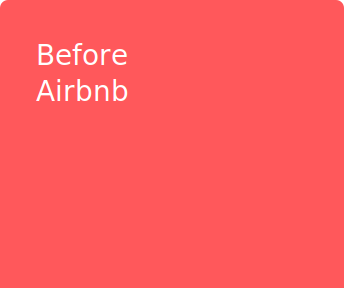
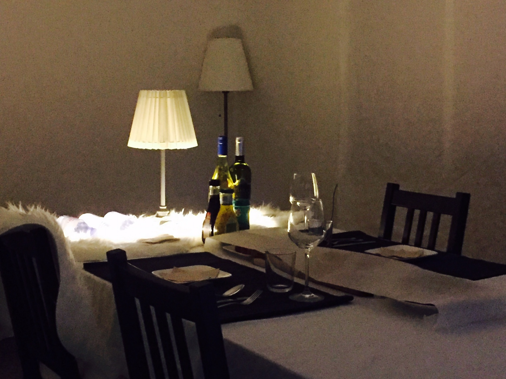

2017
Arfs
아티스트가 만든 레이어 필터를 컨셉으로 담은 필터앱 시리즈.

Before Airbnb
주변 경쟁자 분석을 통해 에어비엔비를 효과적으로 운영할 수 있도록 해주는 서비스.

연남동 작업실
연남동 골목길 한 켠에 만들어진 작은 작업실.
한 번 오면 반하게 되는 아늑한 매력은 반드시 업무를 위한 작업공간만은 아니다.
한 번 오면 반하게 되는 아늑한 매력은 반드시 업무를 위한 작업공간만은 아니다.
2016
2015
2014